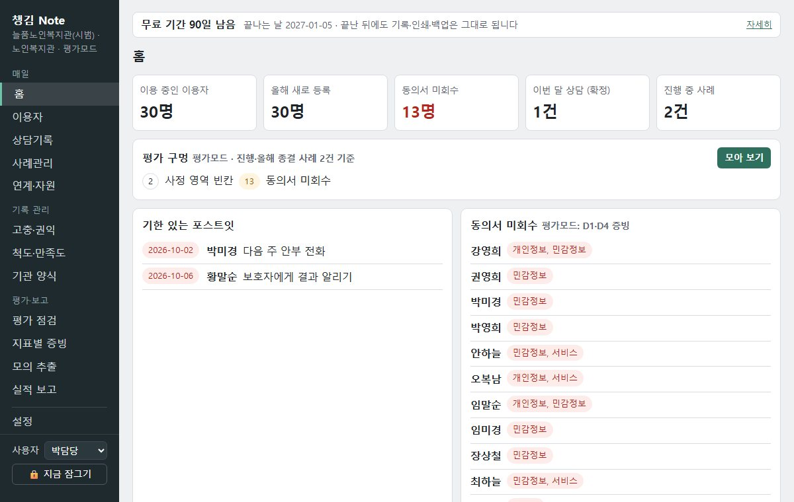
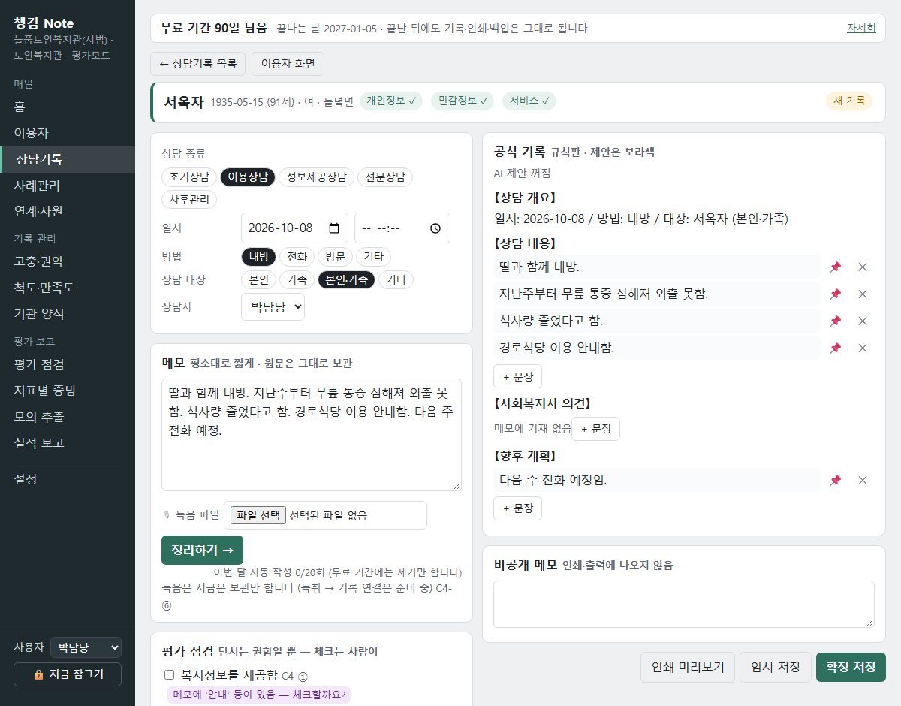
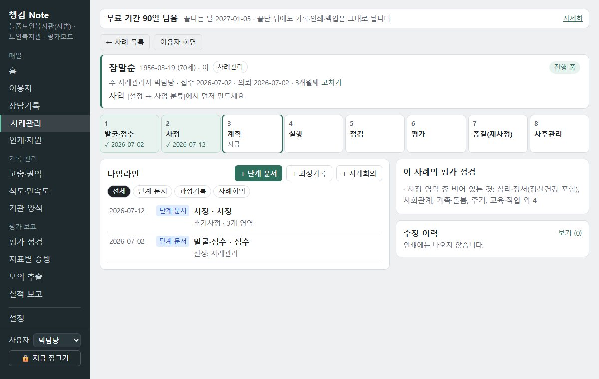
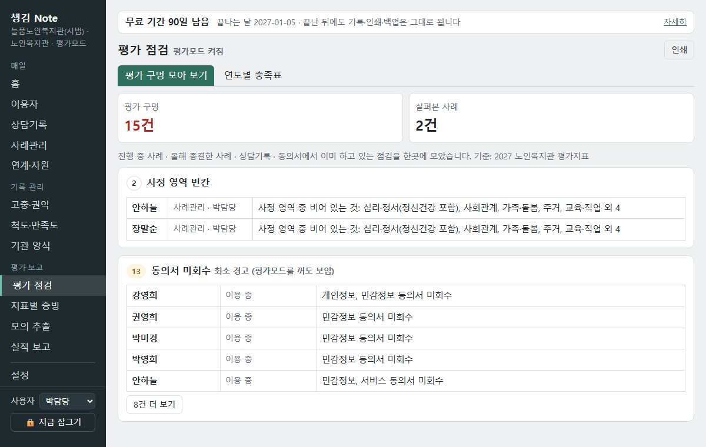

복지관·자활센터 사례관리자를 위한 기록 프로그램입니다. 평소처럼 기록하면, 평가지표 기준으로 채워야 할 곳을 프로그램이 모아 보여 줍니다.
90일 무료로 써 보기 설치 방법 보기사례관리 8단계, 연도별 평가지표 충족 여부를 한 화면에서 봅니다.
개인별 서비스 기록과 평가지침 기준 점검을 함께 합니다.
Gateway 과정과 자활 월별 보고를 기록에서 바로 만듭니다.
평가 기준: 2027년 노인·사회복지관 평가지표, 2026년 장애인복지관 평가지침, 2026년 자활사업 안내.
동의서 받음·철회 상태를 관리하고, 안 받은 사람만 골라 서식을 인쇄합니다.
짧은 메모를 적으면 자동 작성 도우미가 상담 내용·의견·향후 계획의 기록 초안을 만듭니다. 확정은 사람이 합니다.
접수부터 종결·사후관리까지 단계 막대로 보이고, 빠진 단계는 표시됩니다.
지난 기한, 빠진 기록, 안 받은 동의서를 한곳에 모으고, 누르면 그 자리로 갑니다.
최근 3년, 지표 번호별로 채운 것과 모자란 것을 숫자로 보여 줍니다.
연계 자원, 고충 처리 기한(15일/30일), 권익옹호, 척도 사전·사후 측정을 기록합니다.
월·분기·연 실적표를 엑셀로 저장하거나 한글에 붙여 넣고, 지표별 증빙을 한 장씩 모읍니다.
기관에서 쓰는 한글·워드 양식을 붙여 넣어 등록하면, 기록으로 채워 인쇄합니다.




※ 화면의 이름은 모두 시범자료(가공 인물)입니다. 그림을 누르면 크게 보입니다.
준비 중: 녹취를 상담일지로 옮기기, 원자료 엑셀 내보내기, 한글 원본(hwpx) 양식 채우기, 희망이음 내보내기.
설치한 PC 안에서만 열립니다. 같은 망의 다른 PC에서도 열리지 않습니다.
자료·동의서 스캔·백업이 관리자 비밀번호로 암호화됩니다.
처음 설정 때 복구 열쇠를 인쇄합니다. 하루 한 번 자동 백업, PC를 바꿀 때 되살리기가 들어 있습니다.
비밀번호와 복구 열쇠를 모두 잃으면 만든 쪽도 자료를 열 수 없습니다. 복구 열쇠는 PC와 떨어진 곳에 보관해 주세요.
| 무료로 계속 | 이용자·동의서·상담기록 쓰기와 보기·인쇄·백업 |
|---|---|
| 월 20회까지 무료 | 자동 작성 도우미(메모 → 기록 초안) 세는 법: 자동 작성으로 만든 초안을 확정해 저장한 기록 1건을 1회로 셉니다. 같은 기록을 다시 눌러 고치는 것은 세지 않습니다. |
| 구독 | 자동 작성 20회 넘게, 평가 점검(평가 구멍 모아 보기·연도별 충족표), 지표별 증빙, 실적 보고, 기관 양식 채우기 · 이용료는 시범 뒤 안내 |
설치해 처음 설정한 날부터 90일 동안은 구독 기능까지 모두 무료로 쓰실 수 있습니다. 남은 날은 프로그램 화면에 보입니다.
구독하지 않으셔도 넣으신 자료는 보기·인쇄·백업이 그대로 됩니다. 자료를 붙잡아 두지 않습니다.
| 대상 | 노인복지관 · 사회복지관 · 장애인복지관 · 지역자활센터 사례관리 담당자 |
|---|---|
| 신청 | 신청 없이 바로 받아서 설치해 쓰시면 됩니다. 기한이 없고, 기관 수와 쓰시는 분 수에 제한이 없습니다 — 신청하거나 뽑는 절차가 없습니다. |
| 기간 | 설치한 날부터 90일, 이 기간 무료 — 기관 수·인원과 상관없이 같습니다. 끝나는 날은 설치한 날에 따라 기관마다 다릅니다. 프로그램을 처음 설정한 날부터 셉니다. 남은 무료 기간은 프로그램 화면에 보입니다. 90일이 지나면 구독 기능만 잠기고, 기록 쓰기·보기·인쇄·백업과 자동 작성 한 달 20회는 그대로 됩니다. |
| 드리는 것 | 사용 안내 · 연습용 시범자료(가공 인물 30명) · 설치 도움 — 설치가 막히면 문의 메일로 알려 주세요. 도와드립니다. 설치본은 아래 '설치'에서 누구나 받으실 수 있습니다. |
| 부탁드리는 것 | 2주에 한 번 짧은 의견(5문항) |
챙김 Note는 시험판입니다. 처음부터 실제 자료를 넣어 쓰셔도 됩니다. 다만 시험판이므로 백업과 복구 열쇠 보관은 기관에서 꼭 해 주세요. 들어 있는 시범자료(가공 인물 30명)로 먼저 연습해 보실 수도 있습니다. 쓰시기 전에 이용약관(시험판)을 읽어 주세요.
설치본 받는 곳: 이 홈페이지에서 누구나 받으실 수 있습니다. 신청 없이 받아서 바로 설치해 쓰시면 됩니다.
챙김 Note 0.2.0 설치본 받기 (zip · 약 144MB)
누르면 설치본(zip 한 개)이 바로 받아집니다. 받기 전에 이용약관(시험판)을 읽어 주세요 — 시험판이라는 점, 책임 범위, 자료와 백업은 기관 PC에서 기관이 관리한다는 내용입니다.
준비물: Windows 10/11 PC, 처음 켤 때 인터넷 연결, 디스크 빈자리 3GB쯤, 관리자 비밀번호로 쓸 문장(8자 이상), 복구 열쇠를 인쇄할 프린터.
AI 문장 다듬기 제안에 쓰는 AI 모델(약 2.5GB)은 설치본에 들어 있지 않습니다. 처음 켤 때 프로그램이 스스로 받으며, 따로 누르실 것이 없습니다. 빠른 인터넷이면 몇 분, 느리면 30분 넘게 걸릴 수 있습니다. 받는 동안에도 기록은 바로 쓰실 수 있고, 중간에 꺼도 다음에 켤 때 이어서 받습니다.
C:\챙김Note처럼 짧은 곳에 풉니다. 바탕화면·USB는 피해 주세요.챙김Note.exe를 두 번 누릅니다. 검은 창이 뜨고, 잠시 뒤 브라우저에 챙김 Note 화면이 열립니다. 쓰는 동안 검은 창은 닫지 마세요(닫으면 꺼집니다). AI 모델(약 2.5GB)은 화면이 뜬 뒤에 뒤에서 이어서 받으니, 기다리지 않고 바로 쓰셔도 됩니다.아니요. 설치한 PC 안에만 있고 암호화됩니다. 인터넷은 AI 모델을 받을 때와, 새 판이 나왔는지 확인하고 받을 때만 씁니다. 받기만 하고, 기관 자료는 밖으로 보내지 않습니다.
메모를 기록 문체로 옮기는 것은 규칙으로 도는 자동 작성 도우미입니다. 만든 것은 초안이고, 확정은 담당자가 합니다. AI 문장 다듬기 제안은 문장을 읽기 쉽게 고쳐 제안만 하고, 받아들일지는 담당자가 정합니다. 시범 기간에도 쓰실 수 있습니다. AI 모델(약 2.5GB)은 처음 켤 때 프로그램이 스스로 받습니다. 인터넷이 막힌 PC에서는 AI 제안 없이 자동 작성 도우미만 쓰시게 됩니다.
설치한 날부터 90일이 지나면 구독 기능만 잠깁니다. 구독하지 않으셔도 기록 쓰기·보기·인쇄·백업은 그대로 됩니다. 남은 날은 프로그램 화면에서 보실 수 있습니다.
지금은 PC 한 대에 한 기관 자료입니다. PC를 바꿀 때는 백업에서 되살리기를 씁니다.
아니요. 이 홈페이지와 안내의 화면에 나오는 이름은 모두 시범자료(가공 인물)입니다.